1. 卡池活動時間 3/4~3/17
[限定] 龍井蝦仁、子推燕、桃花粥
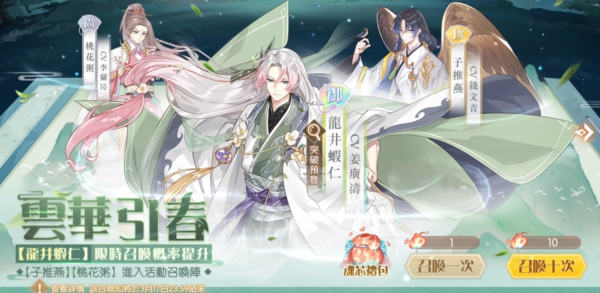
2. 活動兌換
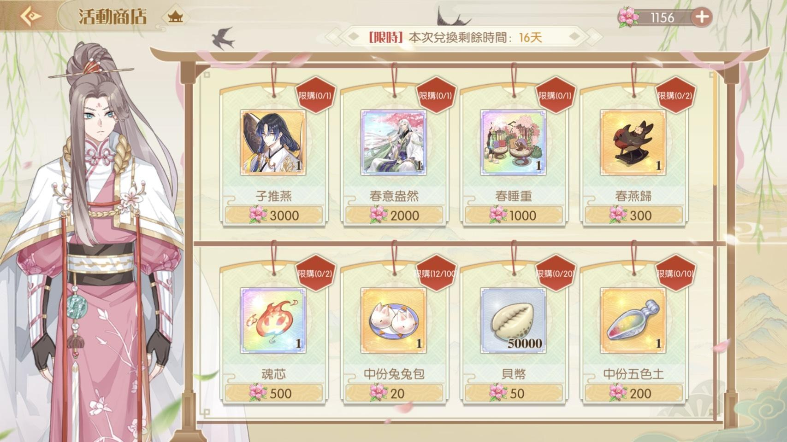
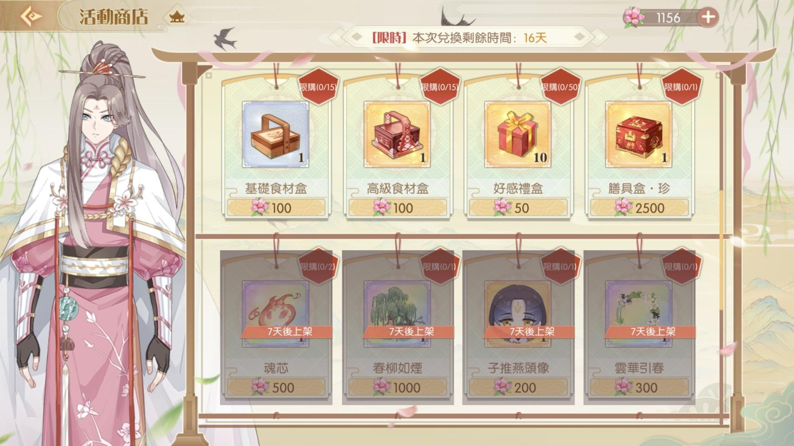
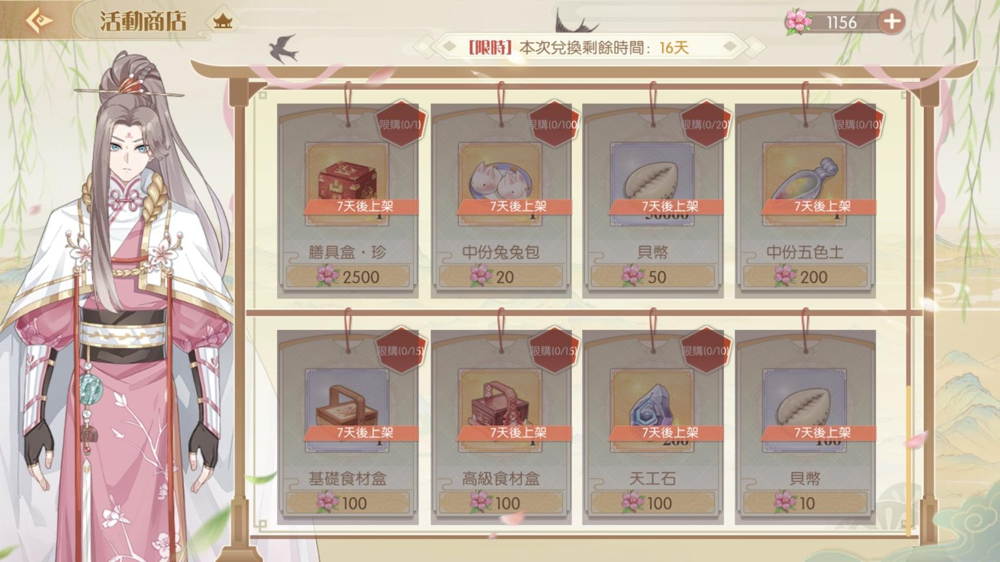
2. 活動兌換
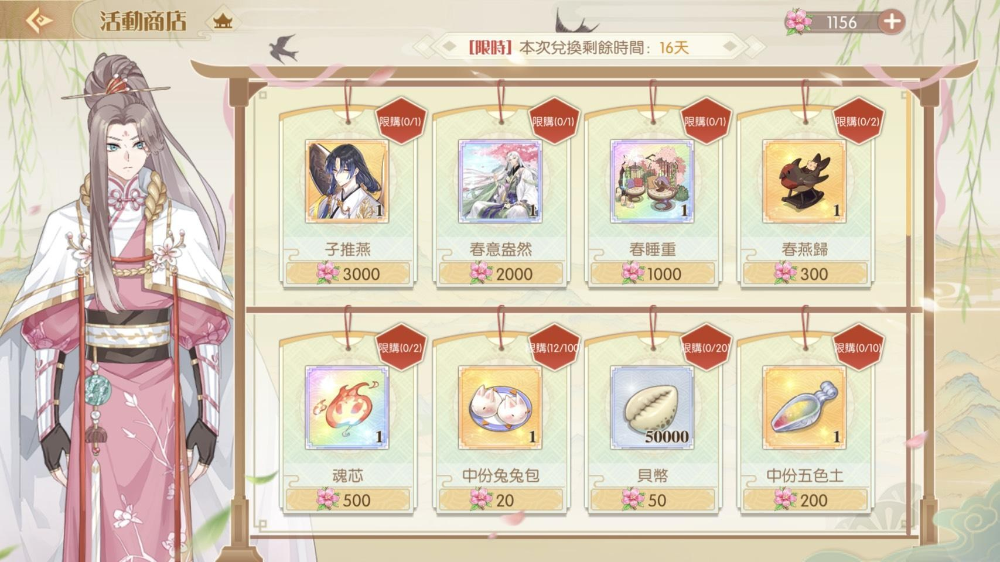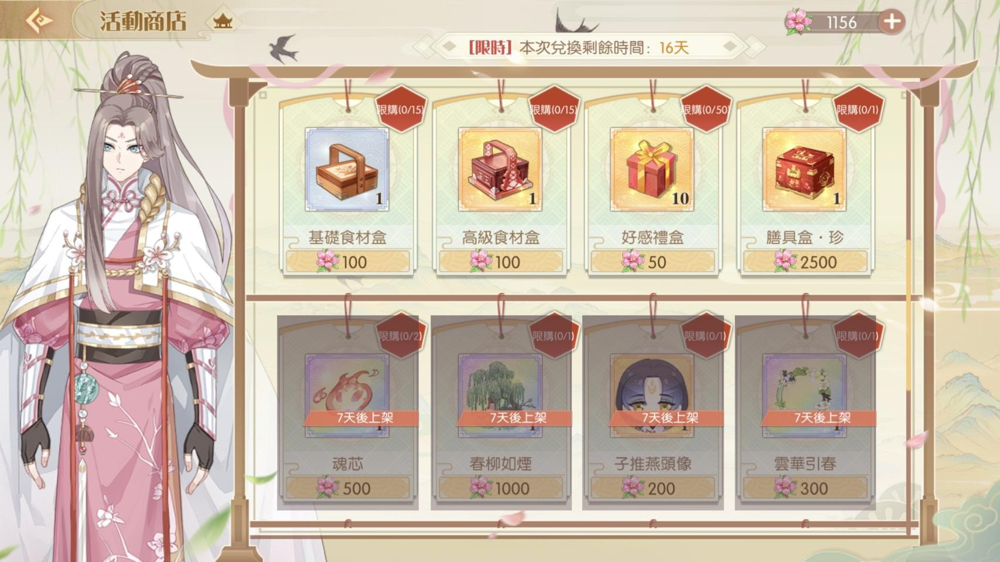
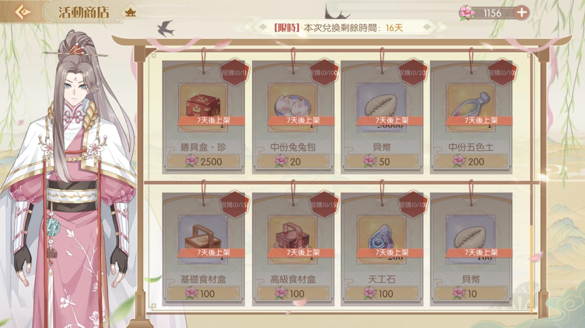
第一期開放兌換 所需桃花: 20600
第二期開放兌換 所需桃花: 14000 +2700
總計 34600+2700 = 37300 桃花
3. 推薦兌換順序
優先兌換 子推燕 增加15%的桃花掉落加成 > 魂芯*4 > 調料碎片*5 > 膳具盒 珍 > 中份兔兔包 > 中分五色土 > 天工石 > 金幣 > 尚、珍品升星素材 剩下的活動限定物品、食材盒、好感禮盒就由個人喜好決定
4. 桃花掉落與加成
加成食魂: 龍井蝦仁、子推燕、桃花粥、春捲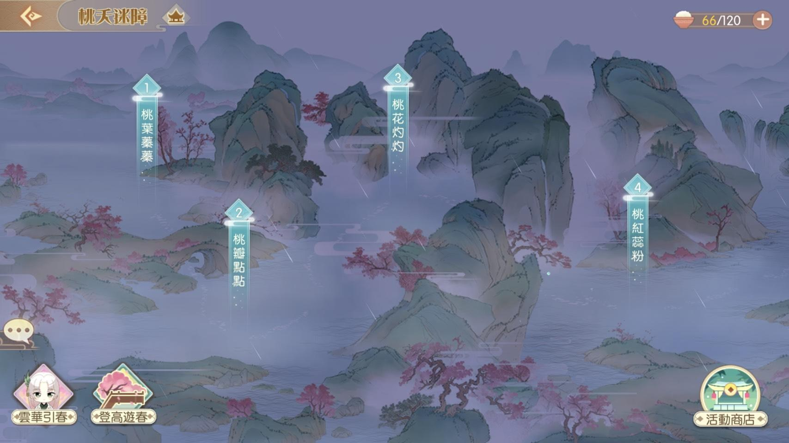
每一個關卡的桃花基礎掉落由 50~57 每關增加1個
因此挑戰活動的關鍵不是在於打越深的關卡
而是帶上最多的加成打困難第一關
但還是記得個通關一次拿通關的桃花獎賞
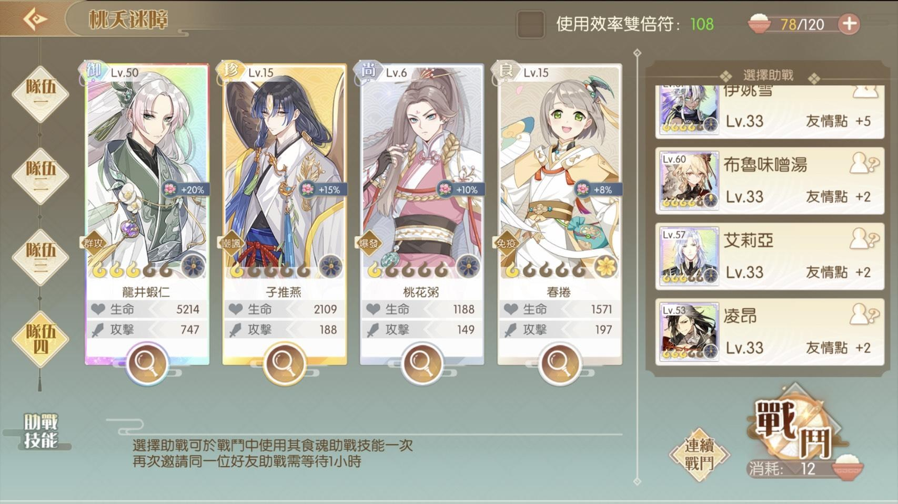
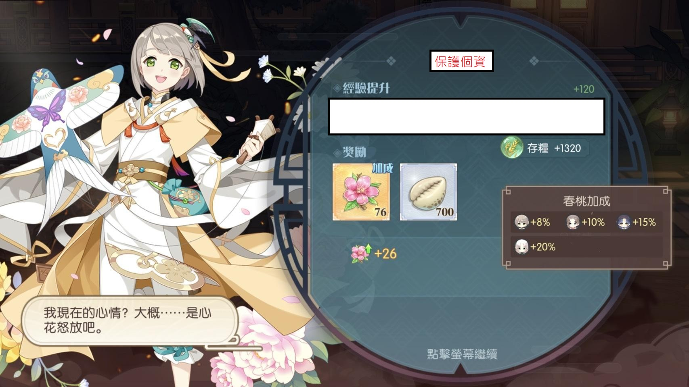
5. 高難度關卡[登高遊春]
總共有十關，基本上是給自己挑戰用的，考驗自己主力的練度大概要群體、單體 65~70 左右的練度，加上適合的輔助
能爬多少算多少，拿首次通關的桃花
全破會有徽章獎勵
6. 一日之計（活動第二階段開放）
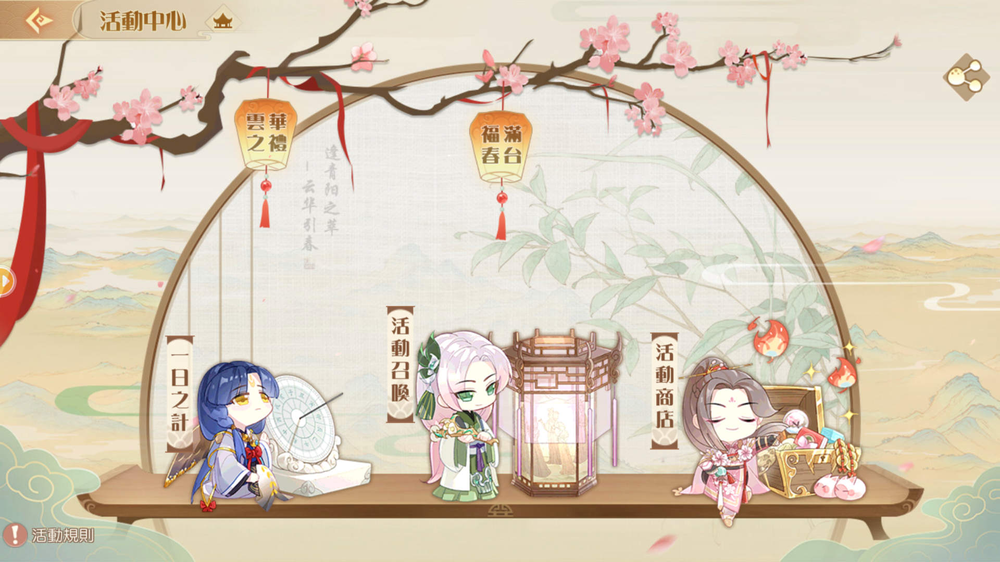每天打3次 普通 關卡
會有300桃花和其他額外獎賞